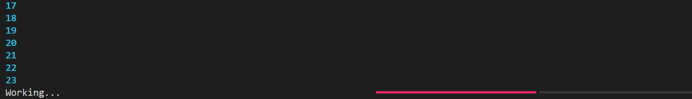

with progress: for n in progress.track(range(100)): progress.print(n) sleep(0.1)
运行上述代码，在打印0到99的同时，底部进度条在指示着当前打印的进度：

你还可以在终端打印日志信息，信息的格式也可以自定义：
1 2 3 4 5 6 7 8 9 10
import time
from rich.progress import Progress
with Progress() as progress: task = progress.add_task("twiddling thumbs", total=100) for job inrange(100): progress.console.print(f"[bold blue]Working on job #{job}") time.sleep(0.1) progress.advance(task)
效果：
读取本地文件时也可以加个进度条：
1 2 3 4
import rich.progress
with rich.progress.open("data.txt", "r") as file: data = file.readlines()